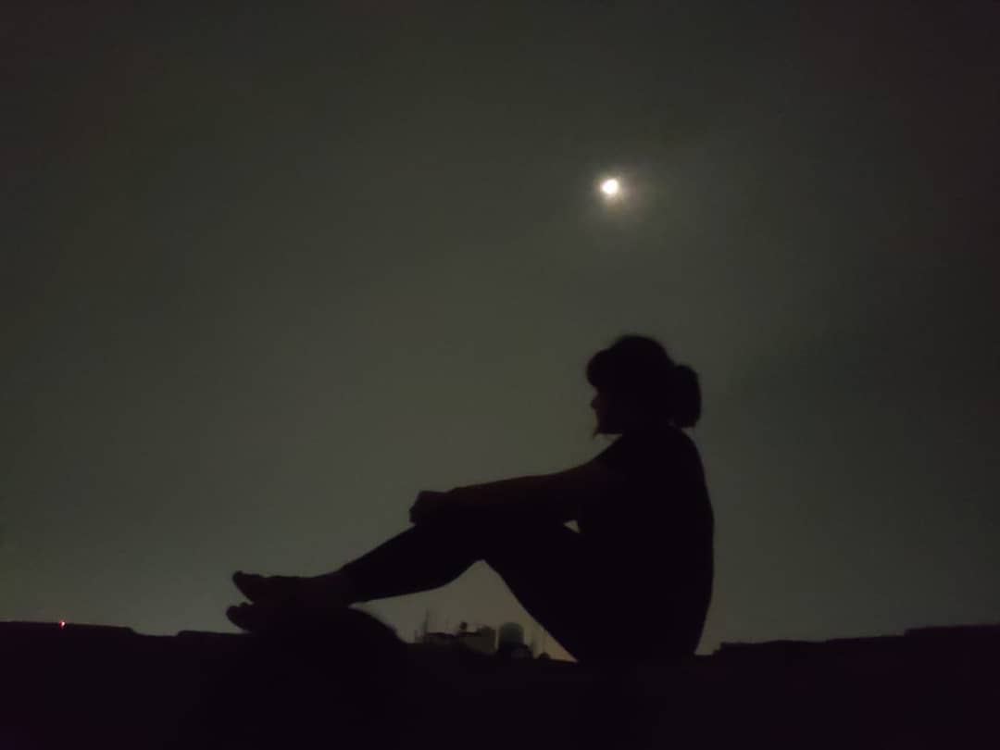
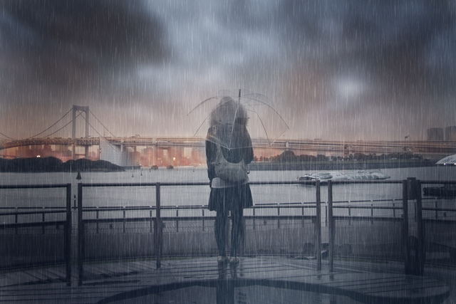

About me
- I'm Sajini Manurangi Premarathna
- An undergraduate at UOM
- 21 yrs
My Hobbies
Travelling

Listening music

Reading books

Watching Movies
I Like to explore about...
Opacarophile
Sunsets are a wonderful inducer of calm, of taking away stress, of slowing us down. They relax us, they can induce a time of meditation or to not
think at all as we just experience the joy of the moment brought on by the view.I love sunsets. Lots of people love sunsets. We paint them,
we photograph them, we sit and watch them. Until recently, I had no idea that there is an actual word associated with this attraction.
Nyctophile

One thing I particularly don’t like about summer is the heat. And every nyctophile will agree with me.
After the sunset, the temperature goes down, and the annoying swelter finally breaks. And there is nothing more revitalizing than a breath of night’s
cool air after a hot summer day.It’s not only the air and the scent that are very special about the nighttime. It’s also the absence of people’s voices,
car sounds, and other city noises.
The quiet that governs the hours of darkness is deeply meditative. In the absence of noises, I can finally relax and think.
Coffeeholic
Knowing some basic terminology is important, whether you drink coffee yourself or are looking for coffee gifts for someone you care about.
It will also help you make an informed order at Starbucks. Either way, adding these words for coffee lovers to your vocabulary will help you
enjoy your next “cup of joe” just a little more.
Pluviophile

Pluviophiles find comfort and peace when they hear the sound of raindrops on the roof and they find the scent of moist soil to be aromatic.
It is also common to see children playing in the rain, but this hobby gradually fades away as they grow up. Some people even find it comfortable
and relaxing to play outside when it is raining in their youth or adulthood.